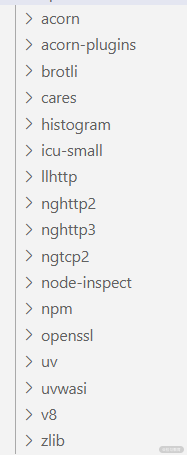
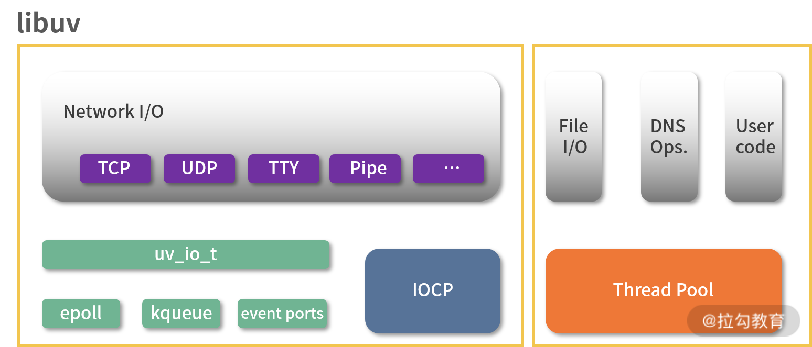
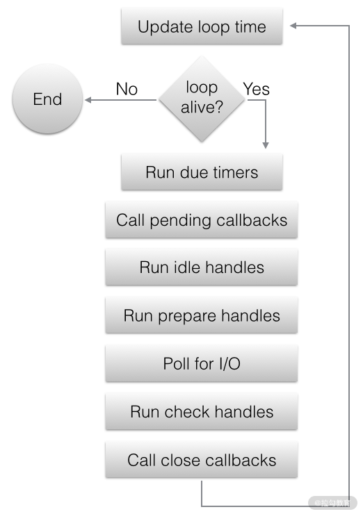

要点：Nodejs源码解析。
提到 Node.js，相信大部分前端工程师都会想到基于它来开发服务端，只需要掌握 JavaScript 一门语言就可以成为全栈工程师，但其实 Node.js 的意义并不仅于此。
很多高级语言，执行权限都可以触及操作系统，而运行在浏览器端的 JavaScript 则例外，浏览器为其创建的沙箱环境，把前端工程师封闭在一个编程世界的象牙塔里。不过 Node.js 的出现则弥补了这个缺憾，前端工程师也可以触达计算机世界的底层。
所以 Node.js 对于前端工程师的意义不仅在于提供了全栈开发能力，更重要的是为前端工程师打开了一扇通向计算机底层世界的大门。这一课时我们通过分析 Node.js 的实现原理来打开这扇大门。
Node.js 源码结构
Node.js 源码仓库的 /deps 目录下有十几个依赖，其中既有 C 语言编写的模块（如 libuv、V8）也有 JavaScript 语言编写的模块（如 acorn、acorn-plugins），如下图所示。

Node.js 的依赖模块
- acorn：前面的课程中已经提过，用 JavaScript 编写的轻量级 JavaScript 解析器。
- acorn-plugins：acorn 的扩展模块，让 acorn 支持 ES6 特性解析，比如类声明。
- brotli：C 语言编写的 Brotli 压缩算法。
- cares：应该写为“c-ares”，C 语言编写的用来处理异步 DNS 请求。
- histogram：C 语言编写，实现柱状图生成功能。
- icu-small：C 语言编写，为 Node.js 定制的 ICU（International Components for Unicode）库，包括一些用来操作 Unicode 的函数。
- llhttp：C 语言编写，轻量级的 http 解析器。
- nghttp2/nghttp3/ngtcp2：处理 HTTP/2、HTTP/3、TCP/2 协议。
- node-inspect：让 Node.js 程序支持 CLI debug 调试模式。
- npm：JavaScript 编写的 Node.js 模块管理器。
- openssl：C 语言编写，加密相关的模块，在 tls 和 crypto 模块中都有使用。
- uv：C 语言编写，采用非阻塞型的 I/O 操作，为 Node.js 提供了访问系统资源的能力。
- uvwasi：C 语编写，实现 WASI 系统调用 API。
- v8：C 语言编写，JavaScript 引擎。
- zlib：用于快速压缩，Node.js 使用 zlib 创建同步、异步和数据流压缩、解压接口。
其中最重要的是v8 和uv两个目录对应的模块。
在“09 | 为什么代码没有按照编写顺序执行”中我们详细分析过 V8 的工作原理，V8 本身并没有异步运行的能力，而是借助浏览器的其他线程实现的。但在 Node.js 中，异步实现主要依赖于 libuv，下面我们来重点分析 libuv 的实现原理。
什么是 libuv
libuv 是一个用 C 编写的支持多平台的异步 I/O 库，主要解决 I/O 操作容易引起阻塞的问题。最开始是专门为 Node.js 使用而开发的，但后来也被 Luvit、Julia、pyuv 等其他模块使用。下图是 libuv 的结构图。

libuv 结构图
我用黄色线框将图中模块分为了两部分，分别代表了两种不同的异步实现方式。
左边部分为网络 I/O 模块，在不同平台下有不同的实现机制，Linux 系统下通过 epoll 实现，OSX 和其他 BSD 系统采用 KQueue，SunOS 系统采用 Event ports，Windows 系统采用的是IOCP。由于涉及操作系统底层 API，理解起来比较复杂，这里就不多介绍了，对这些实现机制比较感兴趣的同学可以查阅这篇文章“各种 IO 复用模式之 select、poll、epoll、kqueue、iocp 分析”。
右边部分包括文件 I/O 模块、DNS 模块和用户代码，通过线程池来实现异步操作。文件 I/O 与网络 I/O 不同，libuv 没有依赖于系统底层的 API，而是在全局线程池中执行阻塞的文件 I/O 操作。
libuv 中的事件轮询
下图是 libuv 官网给出的事件轮询工作流程图，我们结合代码来一起分析。

libuv 事件轮询
libuv 事件循环的核心代码是在 uv_run() 函数中实现的，下面是 Unix 系统下的部分核心代码。虽然是用 C 语言编写的，但和 JavaScript 一样都是高级语言，所以理解起来也不算太困难。最大的区别可能是星号和箭头，星号我们可以直接忽略。例如，函数参数中 uv_loop_t* loop 可以理解为 uv_loop_t 类型的变量 loop。箭头“→”可以理解为点号“.”，例如，loop→stop_flag 可以理解为 loop.stop_flag。
1 | // deps/uv/src/unix/core.c |
uv__loop_alive
这个函数用于判断事件轮询是否要继续进行，如果 loop 对象中不存在活跃的任务则返回 0 并退出循环。
在 C 语言中这个“任务”有个专业的称呼，即“句柄”，可以理解为指向任务的变量。句柄又可以分为两类：request 和 handle，分别代表短生命周期句柄和长生命周期句柄。具体代码如下：
1 | // deps/uv/src/unix/core.c |
uv__update_time
为了减少与时间相关的系统调用次数，同构这个函数来缓存当前系统时间，精度很高，可以达到纳秒级别，但单位还是毫秒。
具体源码如下：
1 | // deps/uv/src/unix/internal.h |
uv__run_timers
执行 setTimeout() 和 setInterval() 中到达时间阈值的回调函数。这个执行过程是通过 for 循环遍历实现的，从下面的代码中也可以看到，定时器回调是存储于一个最小堆结构的数据中的，当这个最小堆为空或者还未到达时间阈值时退出循环。
在执行定时器回调函数前先移除该定时器，如果设置了 repeat，需再次加到最小堆里，然后执行定时器回调。
具体代码如下：
1 | // deps/uv/src/timer.c |
uv__run_pending
遍历所有存储在 pending_queue 中的 I/O 回调函数，当 pending_queue 为空时返回 0；否则在执行完 pending_queue 中的回调函数后返回 1。
代码如下：
1 | // deps/uv/src/unix/core.c |
uv__run_idle / uv__run_prepare / uv__run_check
这 3 个函数都是通过一个宏函数 UV_LOOP_WATCHER_DEFINE 进行定义的，宏函数可以理解为代码模板，或者说用来定义函数的函数。3 次调用宏函数并分别传入 name 参数值 prepare、check、idle，同时定义了 uv__run_idle、uv__run_prepare、uv__run_check 3 个函数。
所以说它们的执行逻辑是一致的，都是按照先进先出原则循环遍历并取出队列 loop->name##_handles 中的对象，然后执行对应的回调函数。
1 | // deps/uv/src/unix/loop-watcher.c |
uv__io_poll
uv__io_poll 主要是用来轮询 I/O 操作。具体实现根据操作系统的不同会有所区别，我们以 Linux 系统为例进行分析。
uv__io_poll 函数源码较多，核心为两段循环代码，部分代码如下：
1 | void uv__io_poll(uv_loop_t* loop, int timeout) { |
在 while 循环中，遍历观察者队列 watcher_queue，并把事件和文件描述符取出来赋值给事件对象 e，然后调用 epoll_ctl 函数来注册或修改 epoll 事件。
在 for 循环中，会先将 epoll 中等待的文件描述符取出赋值给 nfds，然后再遍历 nfds，执行回调函数。
uv__run_closing_handles
遍历等待关闭的队列，关闭 stream、tcp、udp 等 handle，然后调用 handle 对应的 close_cb。代码如下：
1 | static void uv__run_closing_handles(uv_loop_t* loop) { |
process.nextTick 和 Promise
虽然 process.nextTick 和 Promise 都是异步 API，但并不属于事件轮询的一部分，它们都有各自的任务队列，在事件轮询的每个步骤完成后执行。所以当我们使用这两个异步 API 的时候要注意，如果在传入的回调函数中执行长任务或递归，则会导致事件轮询被阻塞，从而“饿死”I/O 操作。
下面的代码就是通过递归调用 prcoess.nextTick 而导致 fs.readFile 的回调函数无法执行的例子。
1 | fs.readFile('config.json', (err, data) => { |
要解决这个问题，可以使用 setImmediate 来替代，因为 setImmediate 会在事件轮询中执行回调函数队列。
在“09|为什么代码没有按照编写顺序执行？”中提到过，process.nextTick 任务队列优先级比 Promise 任务队列更高，具体的原因可以参看下面的代码：
1 | // lib/internal/process/task_queues.js |
从 processTicksAndRejections() 函数中可以看出，首先通过 while 循环取出 queue 队列的回调函数，而这个 queue 队列中的回调函数就是通过 process.nextTick来添加的。当 while 循环结束后才调用 runMicrotasks() 函数执行 Promise 的回调函数。
总结
这一课时我们主要分析了 Node.js 的核心依赖 libuv。libuv 的结构可以分两部分，一部分是网络 I/O，底层实现会根据不同操作系统依赖不同的系统 API，另一部分是文件 I/O、DNS、用户代码，这一部分采用线程池来处理。
libuv 处理异步操作的核心机制是事件轮询，事件轮询分成若干步骤，大致操作是遍历并执行队列中的回调函数。
最后提到处理异步的 API process.nextTick 和 Promise 不属于事件轮询，使用不当则会导致事件轮询阻塞，其中一种解决方式就是使用 setImmediate 来替代。
最后布置一道思考题：尝试着阅读一下 libuv 的源码，看看能不能找出 setTimeout 对应的底层实现原理。
Tips: Please indicate the source and original author when reprinting or quoting this article.